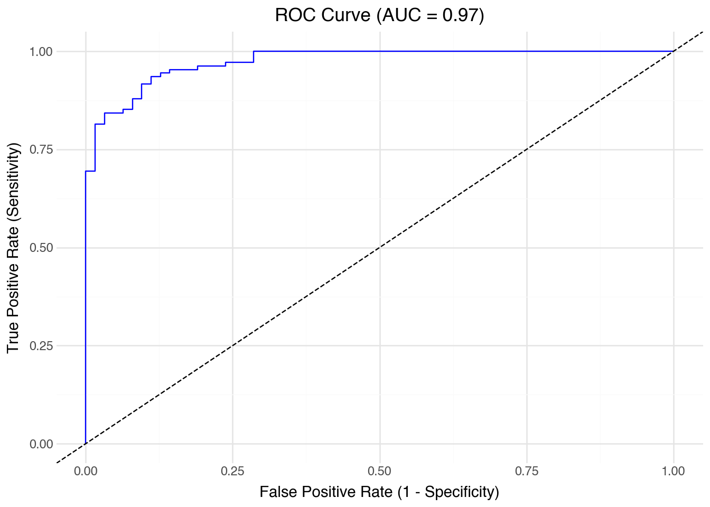

Classification is one of the most widely used tasks in data science, concerned with predicting categorical outcomes rather than continuous quantities. Many real-world problems can be framed as classification, such as diagnosing a disease from medical records, determining whether a loan applicant is likely to default, or identifying spam emails. Compared with regression, which models numeric responses, classification methods aim to assign observations into predefined classes based on their features. Logistic regression, introduced in the previous chapter, provides a natural transition: it uses a regression framework to model the probability of class membership. In this chapter, we expand beyond logistic regression to study how classification models are evaluated and to introduce other methods developed for classification tasks.
9.1 Introduction to Classification
Classification problems arise when the outcome of interest is categorical rather than continuous. Instead of predicting a numerical quantity, the task is to assign each observation to one of several predefined classes. Examples include deciding whether an email is spam or not, predicting a patient’s disease status from clinical measures, or determining whether a financial transaction is fraudulent. These problems are ubiquitous across domains and often require different tools from those used in regression.
A widely used dataset for illustrating binary classification is the Breast Cancer Wisconsin (Diagnostic) dataset. It contains information on 569 patients, each described by 30 numerical features computed from digitized images of fine needle aspirates of breast masses. These features summarize characteristics of the cell nuclei, such as radius, texture, perimeter, smoothness, and concavity, with versions capturing mean, variation, and extreme values. The outcome variable records whether the tumor is malignant or benign. Because the features are all numeric and the outcome is binary, this dataset provides an ideal setting for introducing classification methods and performance evaluation.
Before building classification models, it is useful to perform exploratory data analysis (EDA) to understand the structure of the data. We first load the dataset from scikit-learn.
We can also examine summary statistics of the numeric features.
df.describe().T.head(10)
count
mean
std
min
25%
50%
75%
max
mean radius
569.0
14.127292
3.524049
6.98100
11.70000
13.37000
15.78000
28.11000
mean texture
569.0
19.289649
4.301036
9.71000
16.17000
18.84000
21.80000
39.28000
mean perimeter
569.0
91.969033
24.298981
43.79000
75.17000
86.24000
104.10000
188.50000
mean area
569.0
654.889104
351.914129
143.50000
420.30000
551.10000
782.70000
2501.00000
mean smoothness
569.0
0.096360
0.014064
0.05263
0.08637
0.09587
0.10530
0.16340
mean compactness
569.0
0.104341
0.052813
0.01938
0.06492
0.09263
0.13040
0.34540
mean concavity
569.0
0.088799
0.079720
0.00000
0.02956
0.06154
0.13070
0.42680
mean concave points
569.0
0.048919
0.038803
0.00000
0.02031
0.03350
0.07400
0.20120
mean symmetry
569.0
0.181162
0.027414
0.10600
0.16190
0.17920
0.19570
0.30400
mean fractal dimension
569.0
0.062798
0.007060
0.04996
0.05770
0.06154
0.06612
0.09744
Visualization helps reveal differences between classes. For example, we can compare the distributions of a few key features by diagnosis.
from plotnine import ggplot, aes, geom_histogram, facet_wrap, labsfeatures = ["mean radius", "mean texture", "mean area"]for feature in features: p = ( ggplot(df, aes(x=feature, fill="diagnosis")) + geom_histogram(bins=20, alpha=0.5, position="identity")+ labs(title=feature) ) p
These plots suggest that malignant and benign tumors differ in several features, such as mean radius and mean area. Such separation indicates that classification methods can be effective in distinguishing between the two groups.
9.2 Evaluating Classifiers
Validating the performance of logistic regression models is crucial to assess their effectiveness and reliability. This section explores key metrics used to evaluate the performance of logistic regression models, starting with the confusion matrix, then moving on to accuracy, precision, recall, F1 score, and the area under the ROC curve (AUC). Using simulated data, we will demonstrate how to calculate and interpret these metrics using Python.
9.2.1 Confusion Matrix
The confusion matrix is a fundamental tool used for calculating several other classification metrics. It is a table used to describe the performance of a classification model on a set of data for which the true values are known. The matrix displays the actual values against the predicted values, providing insight into the number of correct and incorrect predictions.
Actual
Predicted Positive
Predicted Negative
Actual Positive
True Positive (TP)
False Negative (FN)
Actual Negative
False Positive (FP)
True Negative (TN)
Four entries in the confusion matrix:
True Positive (TP): The cases in which the model correctly predicted the positive class.
False Positive (FP): The cases in which the model incorrectly predicted the positive class (i.e., the model predicted positive, but the actual class was negative).
True Negative (TN): The cases in which the model correctly predicted the negative class.
False Negative (FN): The cases in which the model incorrectly predicted the negative class (i.e., the model predicted negative, but the actual class was positive).
Four rates from the confusion matrix with actual (row) margins:
True positive rate (TPR): TP / (TP + FN). Also known as sensitivity or recall.
False negative rate (FNR): FN / (TP + FN). Also known as miss rate.
False positive rate (FPR): FP / (FP + TN). Also known as false alarm, fall-out.
True negative rate (TNR): TN / (FP + TN). Also known as specificity.
Note that TPR and FPR do not add up to one. Neither do FNR and FPR.
Four other rates with predicted (column) margins:
Positive predictive value (PPV): TP / (TP + FP). Also known as precision.
False discovery rate (FDR): FP / (TP + FP).
False omission rate (FOR): FN / (FN + TN).
Negative predictive value (NPV): TN / (FN + TN).
Note that PPV and NP do not add up to one.
9.2.2 Accuracy
Accuracy measures the overall correctness of the model and is defined as the ratio of correct predictions (both positive and negative) to the total number of cases examined.
Accuracy = (TP + TN) / (TP + TN + FP + FN)
Imbalanced Classes: Accuracy can be misleading if there is a significant imbalance between the classes. For instance, in a dataset where 95% of the samples are of one class, a model that naively predicts the majority class for all instances will still achieve 95% accuracy, which does not reflect true predictive performance.
Misleading Interpretations: High overall accuracy might hide the fact that the model is performing poorly on a smaller, yet important, segment of the data.
9.2.3 Precision
Precision (or PPV) measures the accuracy of positive predictions. It quantifies the number of correct positive predictions made.
Precision = TP / (TP + FP)
Neglect of False Negatives: Precision focuses solely on the positive class predictions. It does not take into account false negatives (instances where the actual class is positive but predicted as negative). This can be problematic in cases like disease screening where missing a positive case (disease present) could be dangerous.
Not a Standalone Metric: High precision alone does not indicate good model performance, especially if recall is low. This situation could mean the model is too conservative in predicting positives, thus missing out on a significant number of true positive instances.
9.2.4 Recall
Recall (Sensitivity or TPR) measures the ability of a model to find all relevant cases (all actual positives).
Recall = TP / (TP + FN)
Neglect of False Positives: Recall does not consider false positives (instances where the actual class is negative but predicted as positive). High recall can be achieved at the expense of precision, leading to a large number of false positives which can be costly or undesirable in certain contexts, such as in spam detection.
Trade-off with Precision: Often, increasing recall decreases precision. This trade-off needs to be managed carefully, especially in contexts where both false positives and false negatives carry significant costs or risks.
9.2.5 F-beta Score
The F-beta score is a weighted harmonic mean of precision and recall, taking into account a \(\beta\) parameter such that recall is considered \(\beta\) times as important as precision: \[
(1 + \beta^2) \frac{\text{precision} \cdot \text{recall}}
{\beta^2 \text{precision} + \text{recall}}.
\]
See stackexchange post for the motivation of \(\beta^2\) instead of just \(\beta\).
The F-beta score reaches its best value at 1 (perfect precision and recall) and worst at 0.
If reducing false negatives is more important (as might be the case in medical diagnostics where missing a positive diagnosis could be critical), you might choose a beta value greater than 1. If reducing false positives is more important (as in spam detection, where incorrectly classifying an email as spam could be inconvenient), a beta value less than 1 might be appropriate.
The F1 Score is a specific case of the F-beta score where beta is 1, giving equal weight to precision and recall. It is the harmonic mean of Precision and Recall and is a useful measure when you seek a balance between Precision and Recall and there is an uneven class distribution (large number of actual negatives).
The Receiver Operating Characteristic (ROC) curve is a plot that illustrates the diagnostic ability of a binary classifier as its discrimination threshold is varied. It shows the trade-off between the TPR and FPR. The ROC plots TPR against FPR as the decision threshold is varied. It can be particularly useful in evaluating the performance of classifiers when the class distribution is imbalanced,
Increasing from \((0, 0)\) to \((1, 1)\). The ROC curve always starts at (0, 0) and ends at (1, 1) because these points represent the extreme threshold settings of the classifier. When the threshold is so high that all predictions are negative, both TPR and the TPR are zero—corresponding to the point (0, 0). When the threshold is so low that all predictions are positive, both TPR and FPR are one—corresponding to the point (1, 1).
Best classification passes \((0, 1)\). The ideal classifier would achieve a TPR of 1 while keeping the FPR at 0. This corresponds to the point (0, 1) in the ROC space. In practice, the closer a classifier’s ROC curve approaches this top-left corner, the better its discriminative performance.
Classification by random guess gives the 45-degree line. For every threshold, the TPR equals the FPR, because the classifier is just as likely to label a negative instance as positive as it is to label a positive instance correctly. Thus, its points fall on the line where TPR = FPR. This diagonal serves as a baseline: a model whose ROC curve lies on or below this line has no discriminative ability, equivalent to random guessing. Any useful classifier should produce a curve that bows above the diagonal, showing higher TPRs than FPRs across thresholds. The greater the area between the ROC curve and the diagonal, the more informative the model.
Area between the ROC and the 45-degree line is the Gini coefficient, a measure of inequality.
Area under the curve (AUC) of ROC thus provides an important metric of classification results. A higher AUC indicates that the model ranks positive instances higher than negative ones more consistently. Thus, a larger AUC reflects stronger separability between the classes and a more powerful classifier. An AUC of 1 means perfect discrimination, whereas an AUC of 0.5 means random guessing.
The Area Under the ROC Curve (AUC) is a scalar value that summarizes the performance of a classifier. It measures the total area underneath the ROC curve, providing a single metric to compare models. The value of AUC ranges from 0 to 1:
AUC = 1: A perfect classifier, which perfectly separates positive and negative classes.
AUC = 0.5: A classifier that performs no better than random chance.
AUC < 0.5: A classifier performing worse than random.
The AUC value provides insight into the model’s ability to discriminate between positive and negative classes across all possible threshold values.
9.2.7 Breast Cancer Example
Since logistic regression provides a natural starting point for classification, we will apply it to the breast cancer data using a subset of features for simplicity to illustrate the metrics.
The response variable y is a binary array indicating whether a tumor is malignant or benign.
y = 0 corresponds to malignant (cancerous) tumors.
y = 1 corresponds to benign (non-cancerous) tumors.
This encoding follows scikit-learn’s convention for the Wisconsin Diagnostic Breast Cancer dataset. The dataset includes 569 samples with 30 numeric features derived from digitized images of fine needle aspirate biopsies.
When fitting a logistic regression model, the predicted probabilities (y_pred_prob) represent the estimated probability that a tumor is benign (1). Consequently, high predicted probabilities correspond to benign cases, and low probabilities indicate malignant ones. The ROC and AUC computations use these probabilities as scores for the positive class (benign).
Malignant tumors: Precision of 0.91 means that 91% of tumors predicted malignant were truly malignant. Recall of 0.83 shows that the model correctly identified 83% of actual malignant tumors but missed 17% (false negatives). The F1-score of 0.87 balances these two aspects.
Benign tumors: Precision of 0.90 means 90% of predicted benign tumors were correct. Recall of 0.95 shows the model caught 95% of actual benign tumors, misclassifying only 5% as malignant. The F1-score of 0.93 reflects this strong performance.
Overall: The accuracy of 0.91 indicates that about 91% of tumors were classified correctly. The macro average (simple mean across classes) is slightly lower than the weighted average, reflecting the imbalance in sample sizes. Since benign cases are more common, the weighted average leans closer to their stronger performance.
The model seems quite accurate overall, but performs better at identifying benign tumors than malignant ones. The relatively lower recall for malignant cases means that some malignant tumors were misclassified as benign. In medical applications, such false negatives are especially serious and motivate the use of evaluation metrics beyond accuracy alone.
from sklearn.metrics import roc_curve, roc_auc_scoreimport pandas as pdfrom plotnine import ggplot, aes, geom_line, geom_abline, labs, theme_minimal# Assume model and data are from previous logistic regression example# y_test: true labels (0/1)# y_pred_prob: predicted probabilities for the positive classy_pred_prob = model.predict_proba(X_test)[:, 1]# Compute ROC curve and AUCfpr, tpr, thresholds = roc_curve(y_test, y_pred_prob)auc_value = roc_auc_score(y_test, y_pred_prob)# Create ROC DataFrameroc_df = pd.DataFrame({'False Positive Rate': fpr,'True Positive Rate': tpr})# Plot ROC curve( ggplot(roc_df, aes(x='False Positive Rate', y='True Positive Rate')) + geom_line(color='blue') + geom_abline(linetype='dashed') + labs( title=f'ROC Curve (AUC = {auc_value:.2f})', x='False Positive Rate (1 - Specificity)', y='True Positive Rate (Sensitivity)' ) + theme_minimal())

9.3 Tuning Regularized Logistic Models
The logistic regression model with an L1 (lasso) penalty requires a tuning parameter controlling the strength of regularization. In scikit-learn, this parameter is expressed as \(C = 1 / \lambda\). Smaller \(C\) values correspond to stronger penalties, shrinking more coefficients toward zero. The goal is to select \(C\) that optimizes a performance metric such as F1 or AUC via cross-validation.
Step 1: Data and Setup
We continue with the breast cancer dataset.
from sklearn.datasets import load_breast_cancerfrom sklearn.model_selection import StratifiedKFold, cross_val_scorefrom sklearn.linear_model import LogisticRegressionCVfrom sklearn.preprocessing import StandardScalerfrom sklearn.pipeline import Pipelineimport numpy as npimport pandas as pdfrom plotnine import ggplot, aes, geom_line, labs, scale_x_log10, theme_minimal# Load the dataX, y = load_breast_cancer(return_X_y=True)
Step 2: Automatic Selection of Candidate C Values
Rather than manually picking a grid, LogisticRegressionCV determines a data- dependent range of \(C\) values by examining the scale of the coefficients. It constructs a grid of regularization strengths internally based on the variance of the features and outcome, ensuring coverage from under-regularized to over- regularized regimes.
# Use LogisticRegressionCV to determine reasonable C valuesauto_lasso = LogisticRegressionCV( Cs=20, penalty="l1", solver="saga", cv=5, scoring="roc_auc", max_iter=5000, n_jobs=-1)pipeline = Pipeline([ ("scaler", StandardScaler()), ("model", auto_lasso)])pipeline.fit(X, y)## set tested CsC_values = np.logspace(-2, 1, 20)## C_values = auto_lasso.Cs_
Step 3: Cross-Validation for F1 and AUC
While LogisticRegressionCV provides built-in AUC-based selection, we can also evaluate each \(C\) value using different metrics such as F1-score.
from sklearn.model_selection import cross_val_scorecv = StratifiedKFold(n_splits=5, shuffle=True, random_state=42)# Evaluate across automatically chosen C valuesf1_scores = []auc_scores = []for C in C_values: model = LogisticRegression( penalty="l1", solver="saga", C=C, max_iter=5000 ) pipe = Pipeline([ ("scaler", StandardScaler()), ("model", model) ]) f1_scores.append(cross_val_score(pipe, X, y, cv=cv, scoring="f1").mean()) auc_scores.append(cross_val_score(pipe, X, y, cv=cv, scoring="roc_auc").mean())cv_results = pd.DataFrame({"C": C_values, "F1": f1_scores, "AUC": auc_scores})
Step 4: Identify the Optimal Regularization Strength
best_f1 = cv_results.loc[cv_results["F1"].idxmax()]best_auc = cv_results.loc[cv_results["AUC"].idxmax()]print("Best by F1:", best_f1)print("Best by AUC:", best_auc)
Best by F1: C 1.623777
F1 0.979323
AUC 0.994523
Name: 14, dtype: float64
Best by AUC: C 0.784760
F1 0.976486
AUC 0.995644
Name: 12, dtype: float64
This approach avoids arbitrary grids. The smallest \(C\) corresponds to the strongest regularization (the simplest model), while the largest \(C\) allows almost no penalty (the most flexible model). The optimal \(C\) often lies between these extremes. A higher AUC indicates better class separation, whereas a higher F1-score indicates balanced precision and recall. Depending on the application, one metric may be prioritized over the other.